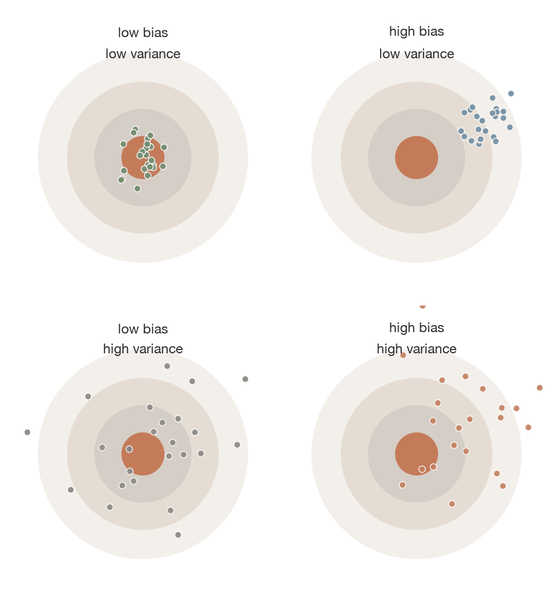
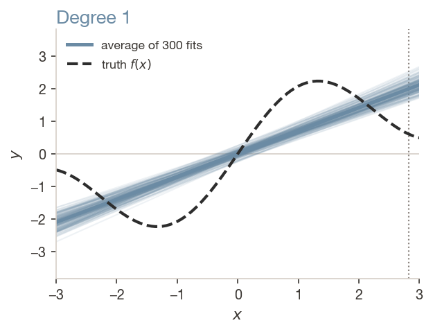
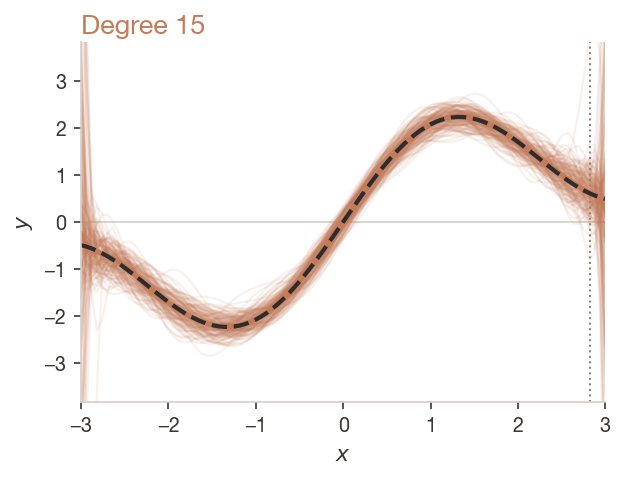
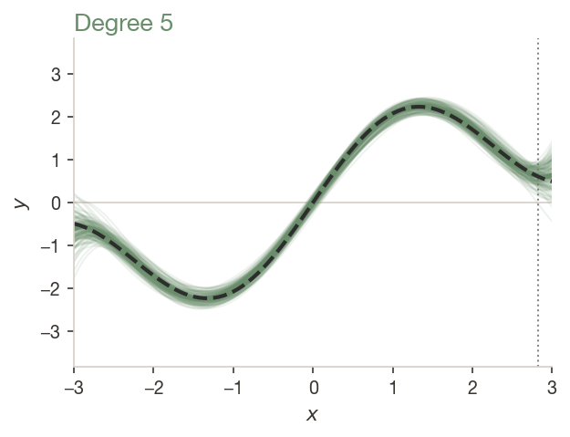
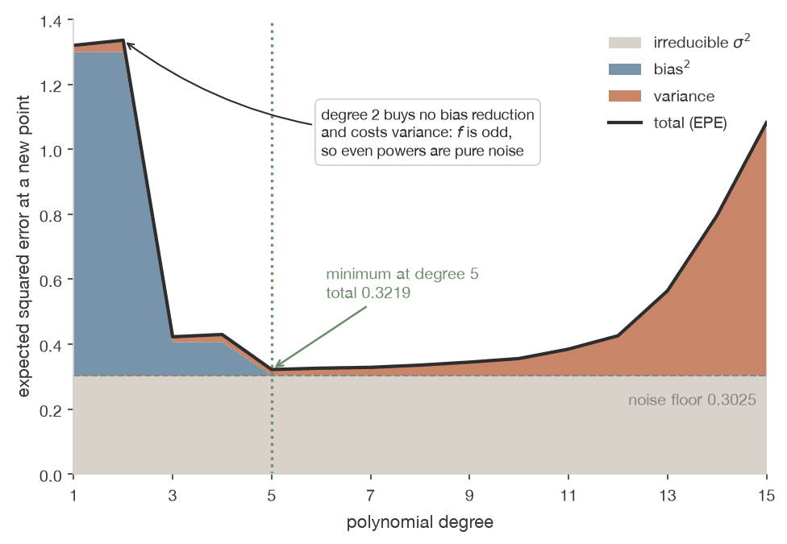
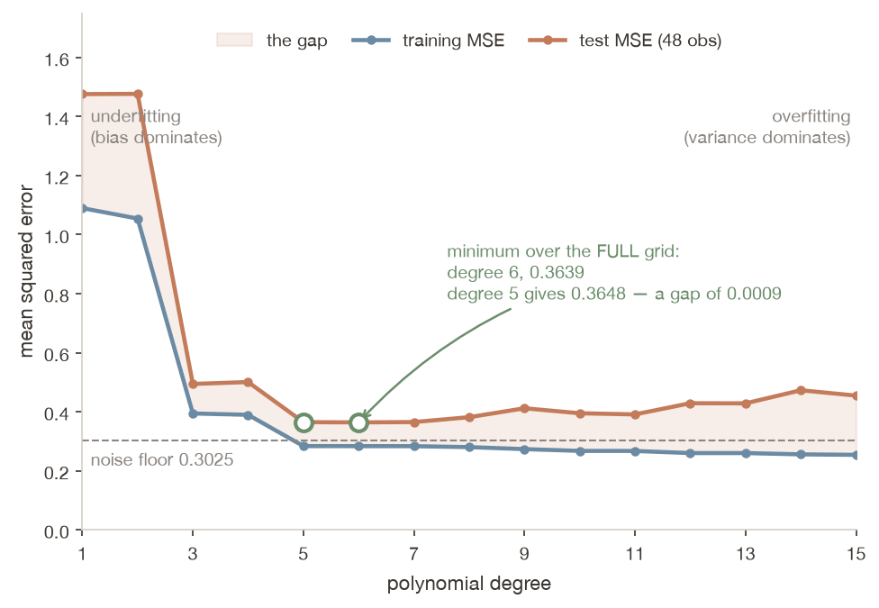
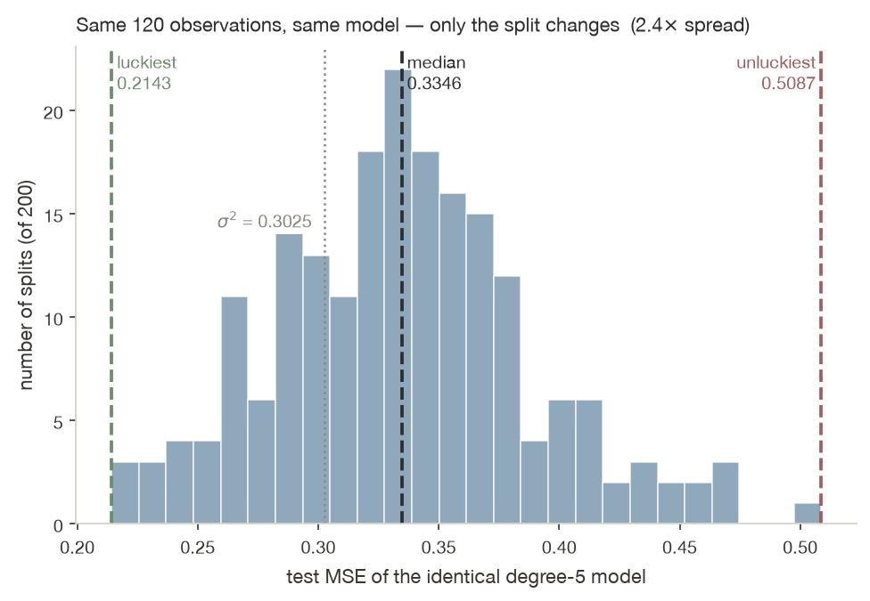
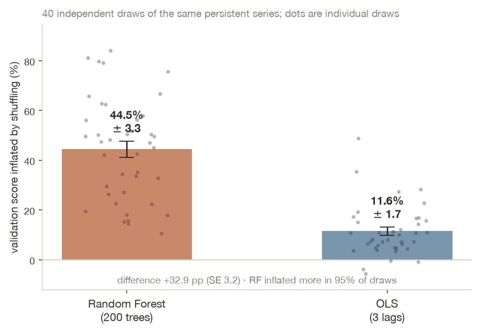
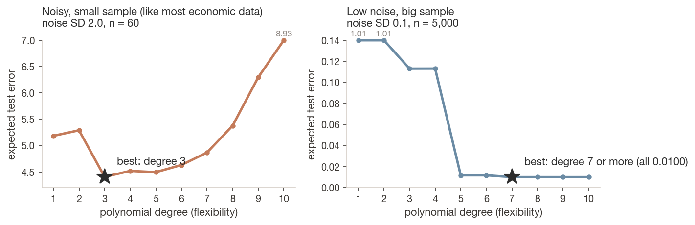
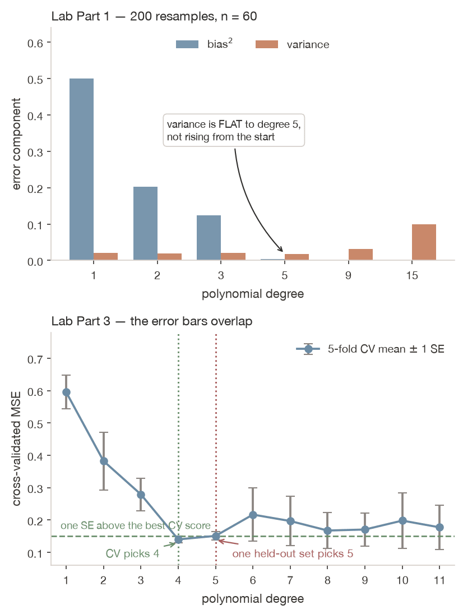

Three sources of error, two you control — and the one no splitting scheme can fix
Dr. Richeng Piao
Department of Economics Northeastern University

Learning Objectives
15.1
State the decomposition, explain each of its three terms, and name the one no model can reduce
15.2
Diagnose over- and underfitting from training-versus-validation curves, and select complexity by cross-validation
15.3
Explain why adding a control is right for inference and often wrong for prediction
15.4
Identify leakage — preprocessing, temporal, grouped — and judge whether a validation score can be believed
Retrieval Practice
Quick Check 1 — Ch 12. Twenty columns of pure noise raised in-sample \(R^2\). Why could \(R^2\) not fall?
Quick Check 2 — Ch 14. A test-set score is itself an estimate. What does it have that a population quantity does not?
Both converge on today: in-sample fit measures flexibility, not accuracy — and the number that replaces it is itself random.
2 November 2021
Zillow's board shut down the business it had launched three and a half years earlier. Zillow Offers bought houses directly from owners, made light repairs and resold them. The whole operation rested on one number: what a house was worth.
They had better housing data than anyone else. They built the Neural Zestimate — one national deep network replacing a patchwork of local models. It performed very well in validation.
$304M
Q3 inventory write-down
$240–265M
further losses expected in Q4
9,790
homes in inventory, 8,172 more under contract
2,000
people laid off — a quarter of the company
The worrying part: the model was not obviously broken. It scored well on held-out data, by the standards its builders used.
Symmetric Errors, Asymmetric Consequences
Two things the model could not see. The housing market changed under it — the slide below shows when and how; Chapter 20 comes back to it. And, more subtly:
The model's errors were symmetric. The market's response to them was not.
A model with unbiased errors, facing a mechanism that keeps only the expensive ones, loses money on average — and no validation score reveals it, because the validation set does not get to decline your offer.
What Changed in 2021: Before and After
An offer is a forecast: the price the house will sell for three to six months later, after repairs. The market moved during those months.
Before: Q2 2021 (Apr–Jun)
US home prices rising faster each month: +1.5% → +1.7% → +1.9% Zillow: “stronger than expected” price growth Bought 3,805 homes, sold 2,086 +$33,849 profit per home sold
After: Q3 2021 (Jul–Sep)
Still rising, but slower each month: +1.7% → +1.6% → +1.3% Bought 9,680 homes, sold 3,032 Paid more than its own estimates of resale prices −$80,771 loss per home sold
Why it broke: offers priced on spring’s pace were accepted in summer. Growth slowed, a renovation labor shortage slowed resales, and more sellers said yes than Zillow planned for. October 2021: it stopped signing new purchases. 2 November: shut down.
Sources: Zillow Group Q2 and Q3 2021 shareholder letters (SEC Form 8-K, Ex. 99.3); S&P CoreLogic Case-Shiller U.S. National Home Price Index, seasonally adjusted, monthly change (FRED CSUSHPISA).
Two Jobs, Two Scorecards
Section 15.1 • The same model, graded two different ways
Inference and Prediction Are Different Jobs
An econometrician and an ML engineer can fit the identical model to the identical data and disagree completely about whether it is any good.
Inference (Ch 10, 13–14)
Prediction (Ch 15 onward)
Object of interest
\(\hat\beta\), a parameter
\(\hat f(x)\), a function
Fear
omitted variable bias
overfitting
Adding a variable
reduces bias — usually good
adds variance — often bad
Measured on
the sample, with a standard error
data the model has never seen
Success
the estimate is identified
the predictions are accurate
The last row reorganises everything. From here forward the question is a held-out score, and a standard error is mostly beside the point.
The Same Model, Two Questions
A city housing authority regresses rent on square footage, bedrooms, neighbourhood, building age and distance to transit — then asks two questions of it.
model = smf.ols("rent ~ sqft + bedrooms + C(neighbourhood) + building_age + transit_km",
data=units).fit()
model.params["bedrooms"] # question 1: read a coefficient
model.predict(vacant_unit) # question 2: make a prediction
"How much does an extra bedroom add to rent?"
Chapter 13's question. The answer is a coefficient. To believe it causally you need the adjustment set right (Ch 10) and the standard error right (Ch 14). Whether it predicts well is almost beside the point.
"What should this vacant unit rent for?"
Now the coefficients are irrelevant. If a Random Forest — which has no coefficients — predicts better, that is strictly better. Nobody asks a Random Forest what a bedroom is worth.
Neighbourhood fixed effects sharpen the bedroom coefficient and may badly hurt prediction — hundreds of parameters on few observations each. You cannot optimise both. Decide which question you are answering before you fit anything.
Common Misconception
"More variables make a model better."
This is the econometrician's instinct, and it is correct for the job econometrics does. For prediction it is wrong more often than right.
Each added variable adds flexibility, and the cost of flexibility is variance. Once the model can already represent the signal, further variables fit noise — improving in-sample \(R^2\), which cannot decrease, while degrading out-of-sample accuracy.
Chapter 12 showed twenty columns of pure noise raising \(R^2\). Today you see what that cost.
The Decomposition
Section 15.2 • Three errors, only two of them negotiable
Bias and Variance Are Shapes Before They Are Terms
300 training sets drawn from the same world. Same model family. Only the sample changes. Each faint curve is one fit; the solid curve is their average; dashed is the truth.

Degree 1 — all 300 lines lie on top of each other, all wrong the same way. Tight, wrong place. Their average is a straight line too.
bias² 0.997 · variance 0.021

Degree 15 — a thicket: each curve chases its own sample’s noise. The average tracks the truth, but you only ever get one curve.
bias² 0.001 · variance 0.778

Degree 5 — tight and near the truth. That is what a minimum looks like.
bias² 0.002 · variance 0.018
Darts: bias is how far the cluster sits from the bullseye, variance is how widely it spreads. The dotted line at \(x = 2.82\) is where the next slide cuts the fan.
Expected Prediction Error, Decomposed
Truth \(y = f(x) + \varepsilon\). Fit \(\hat f\) on one sample, score it at a new point \(x_0\), and average over all the training sets you might have drawn.
Read across: degree 1 loses on bias, degree 15 on variance, degree 5 on neither; 0.30 is in every row. Squared error only (not classification, Ch 17–18).
Three Distinct Failures
Bias — being systematically wrong.
Your model is too rigid to represent the truth. It would still miss with infinite data. The remedy is more flexibility.
Variance — being unstable.
Your model swings depending on which particular sample it happened to see. And you only ever get one sample. The remedy is less flexibility.
Irreducible error — the noise in \(y\) itself.
No model reduces it. It is a property of the world you are measuring, not a modelling failure.
You trade the first two against each other by choosing complexity. You cannot touch the third.
Measuring It, in a World Where We Know the Truth
\(f(x) = 1.5\sin(1.4x) + 0.6x\) on \([-3,3]\), Gaussian noise \(\sigma = 0.55\), \(n = 120\), 300 independently drawn training sets. Bias is defined relative to the true \(f\) — so decomposing error requires knowing the truth, which never happens with real data. That is why this one chapter simulates.
degree
bias\(^2\)
variance
noise \(\sigma^2\)
total (EPE)
1
0.9968
0.0210
0.3025
1.3203
3
0.1036
0.0166
0.3025
0.4227
5
0.0017
0.0177
0.3025
0.3219 ← best
10
0.0003
0.0530
0.3025
0.3558
15
0.0014
≈ 0.78
0.3025
1.0823
Bias\(^2\) collapses as the model gains the flexibility to follow a sine wave. Then variance takes over, climbing by a factor of order forty. Noise never moves — nothing you do to a model changes the randomness in \(y\).
The Whole Curve, Stacked

The grey band is the floor. It is the same height at every degree, because nothing you do to a model changes \(\sigma^2\).
The blue wedge is bias\(^2\): large and left, gone by degree 5.
The orange wedge is variance: invisible at first, then it dominates the plot.
Degree 2 gives no bias reduction and adds variance — \(f\) is an odd function, so even powers are pure noise here.
"It Sums to Four Decimals" — What That Does and Does Not Prove
At every degree, bias\(^2\) + variance + \(\sigma^2\) equals the measured error to four decimal places. That is worth pausing on, for the right reason.
What it proves. The three boxes are exhaustive and non-overlapping. There is no fourth source of squared error hiding anywhere. This is an identity, not an approximation.
What it does not prove. That any particular number is accurate. Both sides are computed from the same array of predictions, so their agreement is forced by algebra — the executed residual is 7×10\(^{-18}\), and it would be that small on random junk.
The evidence that the numbers are right is the figure and the standard errors, not the sum-check. This distinction will matter again in twenty minutes, when cross-validation comes out suspiciously close to the truth.
Poll — The Best You Could Possibly Do
In this simulation we know the truth exactly: \(f(x) = 1.5\sin(1.4x) + 0.6x\), plus Gaussian noise with \(\sigma = 0.55\).
With unlimited data and a perfect model, what is the lowest achievable test MSE?
A) Zero — a perfect model makes no errors
B) About 0.30
C) About 0.55
D) It depends entirely on which algorithm you use
Answer: B — About 0.30
\(\sigma^2 = 0.55^2 = \mathbf{0.3025}\). That is the irreducible error — the variance of the noise in \(y\) itself. No model of any sophistication predicts better than that, ever.
C confuses \(\sigma\) with \(\sigma^2\). D is the belief that a good enough algorithm eventually drives error to zero.
A great deal of wasted effort in applied ML is an attempt to model \(\sigma^2\).
There Is a Floor No Model Can Cross
0.3025
the floor: \(\sigma^2\), the noise in \(y\)
0.3219
best achievable here (degree 5)
6%
how much worse than perfect the best model is
The best possible model here is 6% worse than perfect, and that gap is as good as it gets. Students routinely expect that enough flexibility eventually drives error to zero. It cannot.
Key concept — three errors, only two negotiable. You trade bias against variance by choosing complexity. You cannot touch \(\sigma^2\). If your target contains $0.55 of unpredictable variation, no model — no matter how large, how modern or how expensive — predicts it better than that.
The U-Curve
Section 15.3 • One split of one dataset shows the shape
Training Error Falls. Test Error Turns.
No 300 training sets, no known \(f\). One split of one dataset — 72 training points, 48 test points.
degree
train MSE
test MSE
1
1.0897
1.4761
both bad, and close — underfitting
2
1.0544
1.4768
even powers add nothing here
3
0.3941
0.4942
5
0.2836
0.3648
best on this menu
7
0.2833
0.3650
two ten-thousandths away
10
0.2673
0.3948
15
0.2540
0.4547
train best, test second-worst — overfitting
Training error falls monotonically. It has to: a more flexible model can always fit the training data at least as well — exactly as \(R^2\) could never decrease when Chapter 12 added twenty noise columns to a regression.
AIC: The Same Question, Without a Test Set
Every statsmodels OLS and Logit summary prints AIC: the fit, plus a charge of 2 for every coefficient, \(\text{AIC} = -2\log L + 2k\). Lower is better. It only ranks models fitted to the same rows and the same \(y\); one AIC on its own means nothing.
degree
training \(R^2\)
AIC
BIC
test MSE
1
0.5932
214.5
219.1
1.4761
3
0.8529
145.3
154.4
0.4942
5
0.8941
125.6
139.3
0.3648
7
0.8942
129.5
147.7
0.3650
10
0.9002
131.3
156.4
0.3948
15
0.9052
137.6
174.1
0.4547
Same 72 training and 48 test points as the slide above. \(R^2\) rises at every step. AIC and BIC both bottom out at degree 5, the best test error on this menu, without looking at the 48 test points. BIC charges \(\log n = 4.28\) per coefficient instead of 2, so it tends to pick smaller models.
The midterm example: adding age² gives p = 0.28, AIC 503.6 → 504.3, and 10-fold CV error (RMSE, 20 repeats) 20.24 → 21.15. All three say the square adds nothing, so keep the line.
The Gap Is the Diagnostic

Degree 1: 1.09 vs 1.48. Both bad, almost no gap. A rigid model that is simply bad.
Degree 15: 0.25 vs 0.45. Excellent on train, poor on test. A model that has memorised.
A widening gap between training and validation error is the signature of overfitting — and it is more informative than either number alone.
Three Consequences Students Often Miss
1. A model can be bad without overfitting.
Degree 1 is poor with almost no gap. Its problem is bias, and the remedy is more flexibility, not less. "Underperforming" and "overfitting" are different diagnoses with opposite treatments.
2. The best model is rarely the most flexible one you can afford.
Degree 15 fits the training data best of anything in the table and is the second-worst choice on new data. Any procedure that rewards training fit reliably selects the worst model — which disqualifies in-sample \(R^2\) from this job entirely.
3. Degrees 5 and 7 are indistinguishable — and the menu is an artifact.
0.3648 vs 0.3650 on 48 observations is not a ranking. Worse: sweep every degree and this split's minimum is degree 6, at 0.3639 — a degree the menu never offered. Cross-validation can only compare what you put on the menu.
Common Misconception
"A model that fits the training data perfectly is a good model."
A model with enough parameters can fit any training set exactly — including one that is pure noise. Perfect training fit is evidence of flexibility, not of accuracy, and past a point it is evidence of a problem.
The only score that means anything is on data that played no part in fitting.
This is the same sentence as the retrieval question you answered at the start of class. \(R^2\) could not fall when Chapter 12 added twenty noise columns, and a degree-15 polynomial fits 72 points better than a degree-5 one, for exactly the same reason — and in both cases the number that went up told you nothing about accuracy.
Discussion 1 — Diagnose This Model
4 minutes • pairs
You inherit a colleague's rent-prediction model. Training RMSE $180. Validation RMSE $186. Your manager says: "it's clearly overfitting — use a simpler model."
Is the manager right? What is the actual diagnosis, and what would you do instead?
Be ready to say how you would tell "this model is biased" apart from "we have hit the floor."
Press 4 to start the timer.
One Split Is Not Enough
Section 15.4 • Your held-out score is itself a random variable
Same Data, Same Model, 200 Different Splits

The data never changed. The model never changed. Only which rows landed in the test set.
min 0.2143 — report this and your model looks 36% better than the median
median 0.3346
max 0.5087 — report this and it looks 52% worse
A 2.4× spread in reported performance, from nothing but the partition.
It Gets Worse When You Use the Split to Choose
Let each of those 200 splits pick the best polynomial degree from the menu:
degree chosen
times
share
3
1
0%
5
143
72% ← correct
7
22
11%
10
34
17%
A single split selects the wrong complexity 28% of the time.
More than a quarter of analysts doing everything correctly — holding out data, never peeking, evaluating carefully — would ship the wrong model.
\(k\)-Fold Cross-Validation
The last two slides: one split’s test error ranged from 0.2143 to 0.5087, and choosing the degree on it went wrong 28% of the time. Cross-validation stops betting on one split.
Cut the training data into \(k\) equal folds (here \(k = 5\)). Each fold takes one turn as the validation set while the other four train the model. Then average the five scores.
\(\text{MSE}_j\) is the error on fold \(j\), from a model fitted on the other \(k-1\) folds.
In plain words. Every observation is validated exactly once and used for training \(k-1\) times, so the estimate does not hinge on one lucky partition. Use \(k = 5\) or \(k = 10\); larger \(k\) costs compute without adding much.
Print the Standard Error, Not Just the Mean
10-fold CV on the same 120 points. The mean on its own looks far more precise than it is, so the code prints the SE of each mean beside it.
degree
CV MSE
SE of that mean
1
1.2712
0.0699
3
0.4438
0.0591
5
0.3222 ← selected
0.0426
7
0.3328
0.0461
10
0.3406
0.0512
15
0.4468
0.1062
Cross-validation picks degree 5 — the right answer. Now look at the third column before you believe anything else about this table.
Two Things This Table Cannot Tell You
The 5-fold CV scores for three degrees, on one number line:
1. That CV is unbiased. It lands 0.0003 from the true expected error, but its own standard error is 0.0426, 142 times the agreement: a coincidence of this partition. CV is close to unbiased; one run cannot show it.
2. That degree 5 beats degree 7. Degrees 5, 7 and 10 span 0.0184, less than half of one SE. CV has not found a winner; it picked the smallest of three ties.
The one-standard-error rule. Among models within one SE of the best, take the simplest — because the ordering inside that band is noise, and the simpler model has less variance.
Why There Is a Third Split
Once you use validation scores to choose something — a degree, a hyperparameter, an algorithm — that score stops being an unbiased estimate of future performance, because you selected on it. Chapter 8's multiple-comparisons problem again, in a new setting.
Train
fit the parameters
Validation
choose between models
Test
touched exactly once, at the end
If you check the test set and then change something, it is a validation set now, and you no longer have an unbiased estimate. The professional step is to say so.
Validation chooses, test reports, and the test gets one look.
How Much Is Model Selection Actually Worth?
The floor was 0.3025 and the best model reached 0.3219. The entire range between the best and worst reasonable models — degrees 3 through 10, spanning 0.3648 to 0.4942 on the test split — is small relative to the noise you can never remove.
Squeezing out the last few percent of achievable error is a much smaller prize than it looks when you report improvements as percentages of the total.
This is why experienced practitioners spend their time on data quality, feature construction and problem framing rather than algorithm selection. Those can lower \(\sigma^2\) itself — a better-measured target, a feature capturing something previously unobserved — which is the only way to move the floor.
Swapping one model for another slides you along a curve whose minimum is already fixed. Chapters 16 to 19 get you closer to the floor. They do not lower it.
Leakage
Section 15.5 • When the held-out data was not really held out
Leakage, and the First of Three Kinds
Data leakage is any path by which information from outside the training set reaches the model during fitting. It inflates validation scores, sometimes spectacularly, and the inflation is invisible until deployment — at which point the model is much worse than advertised and nobody can say why.
Preprocessing leakage. Scale or impute before splitting, and the training data has been transformed using the test set's mean and variance. The model has seen a summary of data it should not know exists.
The effect is usually small with simple scaling on a large sample — which is precisely why it survives review. It becomes serious with feature selection, imputation or target encoding: choosing the twenty best predictors by correlation with \(y\) on the full dataset lets the test set vote on which features the model gets. In the extreme, selecting features on pure noise before splitting produces a model that validates well and predicts nothing.
Put every transformation inside a Pipeline and scikit-learn guarantees that .fit() touches only training folds. Manual scaling followed by cross-validation is a bug that produces optimistic numbers and no error message.
Temporal Leakage: Shuffling Leaks the Future
Take a persistent series — a slow-moving level plus noise, which describes most macroeconomic data — and predict it from three lags, once with shuffled \(k\)-fold and once respecting time order.
Two models: OLS on the three lags, and a Random Forest, which averages many decision trees (Chapter 19). For today it is just a flexible model that can bend to fit almost any pattern.
model
shuffled 5-fold (leaky)
time-respecting (valid) ✓
looks better by
Random Forest (200 trees)
1.811
2.150
≈ 16%
OLS (3 lags)
1.525
1.629
≈ 6%
Both look better under shuffling — that is what leakage does. But look at how much better. On this one draw the flexible model gains nearly three times as much.
Also worth noticing: OLS on three lags beats the Random Forest under both schemes.
One Draw Is One Draw — So Replicate It

40 independent draws of the same process:
Random Forest inflated 44.5% (SE 3.3)
OLS inflated 11.6% (SE 1.7)
Difference +32.9 pp (SE 3.2)
RF inflated more in 95% of draws
The chapter's single realisation was at the low end. The direction is not in doubt — and now it has an error bar.
Poll — The Forest Wins by 15%
A colleague compares a Random Forest against OLS using shuffled 5-fold CV on quarterly GDP data. The forest wins by 15%.
What is the single most likely explanation?
A) The forest genuinely captures non-linearities OLS cannot
B) Shuffling leaked future values, and the flexible model exploited them more
C) The forest needs more trees
D) OLS violated homoskedasticity
Answer: B — Shuffling Leaked the Future
Shuffling ordered data is temporal leakage, and the replication says the flexible model gains roughly four times as much from it. The correct comparison uses TimeSeriesSplit — and under it, in our example, OLS wins.
A is not impossible — but it is the claim that has to be earned on a time-respecting split, and usually it is not. C and D are real issues that would not produce this pattern.
Leakage does not merely inflate scores. It inflates them differentially, creating an apparent advantage for exactly the models that would otherwise be penalised for their variance. Any comparison run on leaky splits is systematically biased toward complexity.
Grouped Leakage — The Subtlest Kind
Some datasets hold several rows for the same unit: trips by one driver, quarters for one firm, students in one school. Here: 3 drivers, A, B and C, with 4 trips each. Where do the trips go when we split?
The fix: split by the unit you will predict for. Every trip from a driver lands in the same fold.
cv = GroupKFold(n_splits=5)
cross_val_score(model, X, y, cv=cv, groups=df["driver_id"])
Economist at Work — Cambridge Mobile Telematics
CMT scores driving risk from sensor data on over 55 million drivers, and insurers price policies on it. One driver contributes hundreds of trips on the same commute, the same roads, the same car. Split the trips randomly and the model can learn this person’s commute instead of what makes driving risky.
Topic 14’s rule again: rows from one unit are not independent. There you clustered the standard errors on the group; here you split the folds by the group.
The Scale of the Problem
294
papers affected
17
scientific fields
≈ 0
of ML's reported advantage that survived, in the civil-war case study
Kapoor and Narayanan (2023) found leakage pervasive. In their case study, civil war prediction, complex models had reportedly far outperformed logistic regression. Once the leakage was fixed (imputation run on train and test together, proxies for the outcome), the advantage largely vanished: decades-old logistic regression did as well as the random forests and boosting that had supposedly superseded it.
The sophisticated models were not bad; the evaluation was wrong, in a way that systematically favoured flexibility — because a more flexible model exploits leaked information more efficiently.
The Simplicity Finding
On noisy, tabular, moderately sized economic data, simple models often win. Not always, and not by much — but often enough that flexibility should be argued for rather than assumed.

Same true curve, 200 training sets each. In the noisy world degree 3 wins although the truth needs more: it accepts some bias for a large cut in variance. With little noise and 5,000 rows, flexibility costs almost nothing. Economic data looks like the left panel: big \(\sigma^2\), a few informative features, thousands of rows rather than millions. Topic 15’s own example agrees: OLS on three lags beat the Random Forest under both schemes.
Always fit the simple model first, and make the complex one prove itself on held-out data.
Discussion 2 — The Dean's AUC of 0.94
4 minutes • table groups
Your team has student-level data: 40,000 observations, 5,000 students, 8 semesters each, predicting dropout. Random 5-fold CV reports AUC 0.94. The dean wants to deploy it to flag incoming students.
Name every reason that 0.94 is not the number the dean will get.
Four places to look. You should be able to fill at least three of them from today alone:
Who is in both halves of the split?
What order did the rows arrive in?
Which features exist for an applicant who has not enrolled?
Whose decision put these 5,000 students in the data at all?
Press 4 to start the timer.
The Outcomes You Never Observe
Section 15.5b • The failure no splitting scheme fixes
Selective Labels
You observe the outcome only for the units where some decision went one way.
Back to Zillow. Which houses ended up in its data was decided by sellers, responding to the model’s own offers.
On all 80 homes the offer error averages $0. On the 37 Zillow owns, it is $35k too high. The other 43 never show up, so a model checked on Zillow’s own sales sees a chosen sample.
Bank
sees repayment only for applicants it approved
Court
sees reoffending only for defendants released
Employer
sees performance only for candidates hired
Platform
sees conversion only for users shown the offer
In each case the training data is a non-random sample, chosen by a decision correlated with the outcome, often made by a previous version of your own model.
Perfect Splitting Discipline Provides No Protection
A perfect split cannot fix a sample someone else chose. Fixing it takes research design, not more careful cross-validation.
Bail (Kleinberg, Lakkaraju, Leskovec, Ludwig and Mullainathan, 2018): an algorithm predicting reoffending can only be trained on defendants judges released. Its accuracy says little about the ones they detained, the very people it would be used on.
Three remedies, two of which you already own:
Randomise the decision
Approve some applicants by lottery: their outcomes are unselected. Chapter 9.
Use who decides
Judges assigned at random differ in strictness, so a lenient judge releases people a strict one would hold.
Bound what you cannot see
Say what the unseen outcomes would have to be to reverse your conclusion. Chapter 10’s sensitivity analysis.
Discussion 3 — Would You Sign Your Name to It?
3 minutes • whole room
A university asks you to build a model predicting which applicants will graduate, trained on ten years of enrolled students, to be used in admissions.
Whose decision determined which outcomes you get to observe? And what would you have to change about the design — not the code — before you would sign your name to it?
Think Like an Economist. For any predictive model, ask: whose decision determined which outcomes I get to see? If the answer is anyone at all — a loan officer, a judge, a seller, a previous model — you have a selection problem before you have a prediction problem.
Press 3 to start the timer.
In Practice
Section 15.6 • The checklist is the deliverable
Six Steps, in This Order
1
Split before you look. Hold out the test set first, before exploring, scaling or building features.
2
Every transformation in a Pipeline. Preprocessing leakage becomes impossible, not just discouraged.
3
Choose complexity by CV on the training set. 5 or 10 folds, report the SE, apply the one-SE rule. Never on test or training error.
4
Check whether rows are independent. Same unit twice → GroupKFold. Ordered in time → do not shuffle.
5
Touch the test set once. Report that number. Change the model after and you no longer have a test set.
6
Ask what the prediction will be used for. Squared error assumes symmetric errors and nobody reacting to your predictions. Zillow’s sellers reacted.
Common Misconception
"Cross-validation prevents overfitting."
It detects overfitting; it does not prevent it. Cross-validation is a measurement device — it tells you which complexity generalises best among those you tried. If every candidate is too flexible, CV faithfully reports the least-bad one.
And CV itself can be overfit: try enough model configurations against the same folds and you will eventually find one that suits those particular partitions. Chapter 8's multiple-comparisons problem again — and the reason the final test set exists.
Lab 15 — A Different World, the Same Shape
The lab uses a different simulated world from the chapter — \(f(x)=\sin(1.4x)+0.25x\) on \([0,6]\), \(\sigma=0.45\), and only \(n=60\) — deliberately, so today's shape has to be recognised, not recalled.
Variance does not rise from the start. It is flat at about 0.02 from degree 1 to 5 (0.0211, 0.0187, 0.0205, 0.0180), then climbs to 0.0994 at degree 15 — about five times its degree-5 value. A model too rigid to chase noise does not have much to vary.
The slogan "bias falls, variance rises" describes only the second half of this picture. The lab's own output says so. Report the table, not the slogan. (The lab's table has no noise column: its last column is bias^2+var, smallest at degree 5, 0.0216. Add σ² = 0.2025 to compare it with the chapter's total.)

Poll — Which Degree Do You Report?
In Lab 15, 5-fold CV picks degree 4 (CV MSE 0.1401, with degree 5 at 0.1510), while a single held-out set of 2,000 points picks degree 5. The fold-to-fold SE at degree 4 is 0.0112.
Which do you report?
A) Degree 4 — CV used all the data
B) Degree 5 — 2,000 held-out points beat 5 folds
C) Either — the difference is 0.0109 against an SE of 0.0112, so the data cannot rank them
D) Re-run with a different seed until they agree
Answer: C — The Data Cannot Rank Them
The gap is smaller than one standard error of the estimate itself. This is the one-standard-error rule doing its job on your own lab output: both sit inside the band, so take the simpler — degree 4 — and say why, which is that the comparison lacks resolution, not that degree 4 won.
D is a common practice, and it is p-hacking. B confuses the size of the held-out set with the reliability of the selection made from it — which is exactly what the 200-splits histogram was about.
Key Takeaways
1. Expected prediction error decomposes exactly into bias\(^2\) + variance + irreducible noise — for squared error — and only the first two are yours to trade.
2. The irreducible term is a floor. With \(\sigma = 0.55\) the best achievable error was 0.3219 against a floor of 0.3025, and no model of any sophistication crosses it.
3. Training error falls monotonically and therefore cannot select a model. The widening gap between training and validation error is the signature of overfitting.
4. One split is a single noisy draw — 200 splits of identical data gave a 2.4× spread and chose the wrong model 28% of the time. Cross-validate, print the SE, and when models sit within one SE of each other, take the simplest.
5.Leakage makes every number above meaningless, and it inflates scores most for the most flexible models — 44.5% versus 11.6% in our replication; it turned up in 294 papers in 17 fields, and fixing it erased ML's edge in civil-war prediction.
6. And none of it protects you when someone else's decision determined which outcomes you observe. That is Zillow — and it is an economics problem before it is a modelling one.
End-of-Class Check
A colleague argues that holding back 20% of the data is wasteful — the model would be better if trained on everything.
What is the counter-argument?
Any answer earns full credit — attendance marks that you were here, not that you were right. You get the reasoning either way.
Attendance is the check-in on your phone — enter your NUID once, then vote in today’s polls. No Canvas quiz and no access code.
Looking Ahead
Ch 16
Regularization. Instead of trying degrees, penalise complexity continuously and let cross-validation set the penalty. Ridge and LASSO are today's tradeoff with a continuous setting instead of a switch — and that matters, because our discrete search could only compare the degrees we happened to put on the menu.
Ch 17–18
Classification and evaluation. The decomposition assumed squared error. Categorical outcomes need different loss functions and different metrics — and there is no clean analogue of today's identity.
Ch 19
Trees and forests. A single deep tree is the purest high-variance model in the book. Random Forests reduce that variance by averaging many decorrelated trees — a variance reduction priced exactly as today's tradeoff would price it.
Ch 20–21
Time series. Temporal leakage stops being a warning and becomes the central concern. Random \(k\)-fold is simply invalid on ordered data, and those chapters build the splitting schemes that replace it.
Read Chapter 16 before the next session. Lab 15 is due on Canvas — GitHub repo link, as usual.